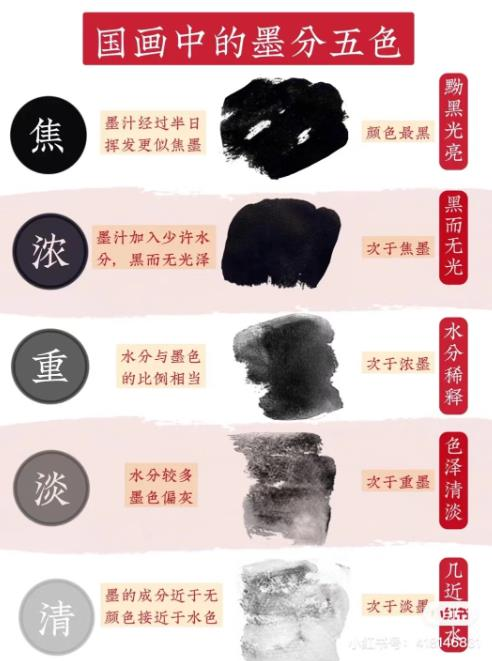

国画调墨技巧是啥？干湿-焦浓重淡清
“ 干”墨中水分少，常用于山石的皴擦，可产生苍劲、虚灵的意趣。
“湿”墨中加水多，与水调匀运用，多用于渲染，
或雨景中的点叶、点苔、使画面具有湿润之感，
或用于泼墨法，表现水墨淋漓的韵味。
“焦”比浓墨更黑，用于笔蘸上极黑之墨是为焦墨
常用来突出画面最浓黑处，或勾点或皴。”
“浓”为浓黑色，暗而无光 ，多用以画近的物象或物体的阴暗面。
“重”浓墨加水，略显通透，多用以画近的物象或物体的灰面。
“淡”水笔墨多，颜色浅，透明度高，适合远景 或亮部，易产生丰富变化
“清”墨含量极少 为远处模糊物象，山 云
